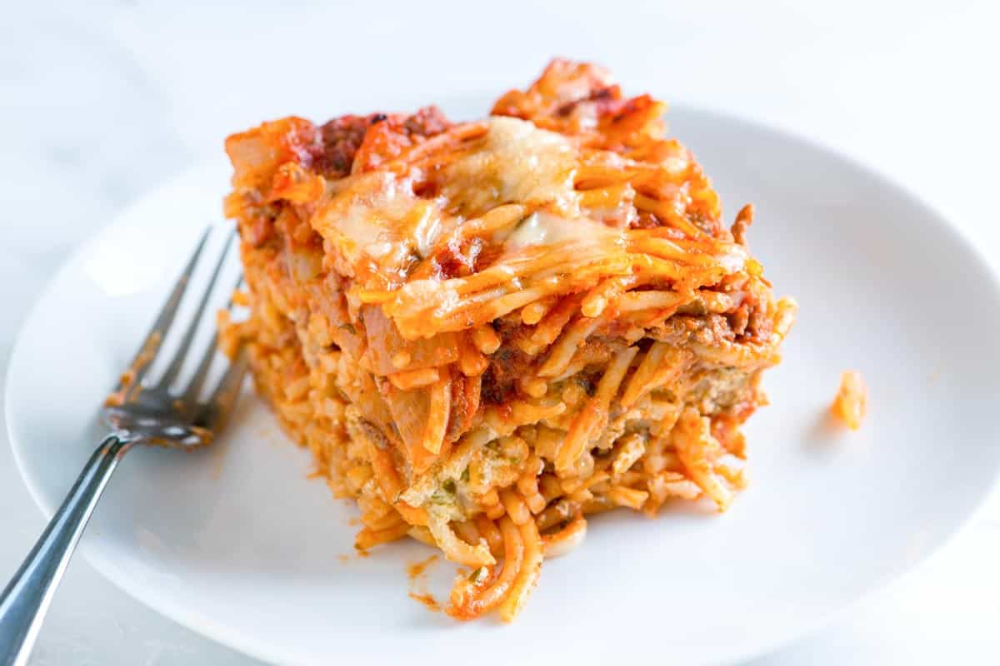

Baked Spaghetti

Description
This recipe creates delicious baked spaghetti that allows you to day dream and enter italy in your very own mind!
Ingredients
- Spaghetti noodles
- Beef
- Spaghetti sauce
- Butter
- Cottage cheese
- Cream cheese
- Sour Cream
- cheese
Steps
- Boil the spaghetti in salted water, then drain and set aside.
- Cook the beed on the stove and discard the grease. Tranmsfer to a bowl and mix in the spaghetti sauce.
- Prepare the baking dish, then spread half of the noodles in the bottom.
- Top with the mixture of cottage cheese, cream cheese, and sour cream.
- Cover with remaining spaghetti and butter.
- Pour the beef mixture over the spaghetti and spread in an even layer.
- Bake for 30 minutes, top with cheese, and continue baking until the cheese is melted.